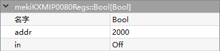
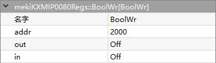
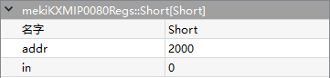
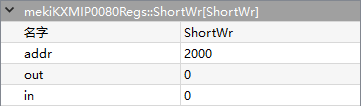
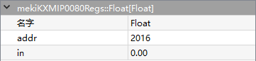
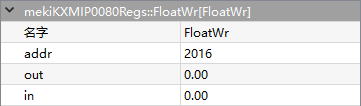
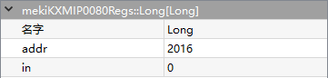
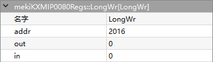

mekiRegs
DDC28P/IO22U/28U/28P/KXM16P/22P/IP0080
- BooleanPoint
- 
Boolean Point is used to access to controller Boolean point type (read only) register = Modbus discrete input. The register address is 0-based whereby controller documented address is 1-based.
- Parameters:
Addr (address) – Boolean point register address, a total of 16 non-repeating address (from 2000 to 2015)
In (boolean) – Boolean point register (read only) input value
{kind=link}
- BooleanWritable
- 
Boolean Writable is used to access to controller Boolean writable type register = Modbus coil output. The register address is 0-based whereby controller documented address is 1-based.
- Parameters:
Addr (address) – Boolean writable register address, a total of 16 non-repeating address (from 2000 to 2015)
Out (boolean) – Boolean writable register output value
In (boolean) – Input value
{kind=link}
- ShortPoint
- 
Short Point is used to access to controller short point type (read only) register = Modbus input register (16-bits integer). The register address is 0-based whereby controller documented address is 1-based.
- Parameters:
Addr (address) – Short point register address, a total of 16 non-repeating address (from 2000 to 2015)
In (integer) – Short point register (read only) input value
{kind=link}
- ShortWritable
- 
Short Writable is used to access to controller short writable type register = Modbus holding register (16-bits integer). The register address is 0-based whereby controller documented address is 1-based.
- Parameters:
Addr (address) – Short writable address, a total of 16 non-repeating address (from 2000 to 2015)
Out (integer) – Writable register output value
In (integer) – Input value
{kind=link}
- FloatPoint
- 
Float Point is used to access to controller float point type (read only) register = Modbus input register (floating point). The register address is 0-based whereby controller documented address is 1-based.
- Parameters:
Addr (address) – Float point address, a total of 16 non-repeating address (from 2016 to 2046)
In (real) – Float point register (read only) input value
{kind=link}
- FloatWritable
- 
Float Writable is used to access to controller float writable type register = Modbus holding register (floating point). The register address is 0-based whereby controller documented address is 1-based.
- Parameters:
Addr (address) – Float writable address, a total of 16 non-repeating address (from 2016 to 2046)
Out (real) – Float Writable register output value
In (real) – Input value
{kind=link}
- LongPoint
- 
Long Point is used to access to controller long point type (readonly) register = Modbus input register (32-bits integer). The register address is 0-based whereby controller documented address is 1-based.
- Parameters:
Addr (address) – Long point address, a total of 16 non-repeating address (from 2016 to 2046)
In (integer) – Long point register (read only) input value
{kind=link}
- LongWritable
- 
Long Writable is used to access to controller float writable type register = Modbus holding register (floating point). The register address is 0-based whereby controller documented address is 1-based.
- Parameters:
Addr (address) – Long writable address, a total of 16 non-repeating address (from 2016 to 2046)
Out (integer) – Long Writable register output value
In (integer) – Input value
{kind=link}